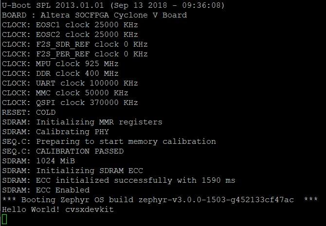
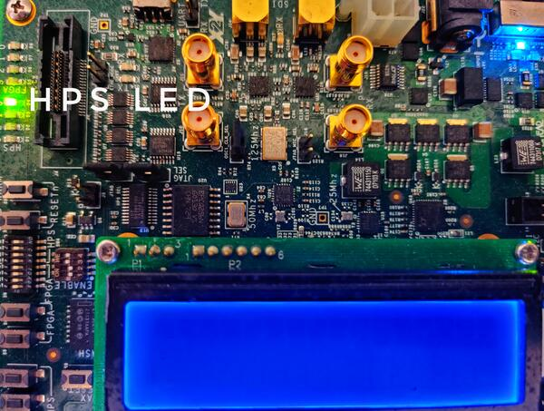

Intel® Cyclone® V SoC Development Kit
Overview
The Zephyr kernel is supported on the Intel® Cyclone® V SoC Development Kit, using its Hard Processor System (HPS) CPU.

Intel®’s Cyclone® V SoC FPGA DevKit (Credit: Intel®)
Hardware
Jumpers and DIP Switch settings
Recommended board settings are the same as the GSRD for Cyclone® V SoC Development Board.
There are two sets of switches on the back of the board. Of particular importance is SW2. First, the board jumpers need to be configured as follows:
J5 : Open
J6 : Short
J7 : Short
J9 : Open
J13: Short
J16: Open
J26: Short pins 1-2
J27: Short pins 2-3
J28: Short pins 1-2
J29: Short pins 2-3
J30: Short pins 1-2
J31: Open
Then, the board switches need to be configured as follows:
SW1: All OFF
SW2: All OFF
SW3: ON-OFF-ON-OFF-ON-ON
SW4: OFF-OFF-ON-ON
Other switches are user switches, their position is application-specific. Refer to the development kit user manual for specifics about jumpers and switches
Necessary Software
You will need the Intel® Quartus® Prime SDK in order to work with this device. The Intel® Quartus® Prime Lite Edition for Linux may be obtained without charge.
For your convenience using the SDK tools (such as quartus_pgm),
you should put the binaries provided by the SDK
in your path. Below is an example, adjust ALTERA_BASE to where you installed the
SDK:
export QUARTUS_ROOTDIR=/opt/intelFPGA_lite/21.1
export PATH=$PATH:$QUARTUS_ROOTDIR/quartus/bin:$QUARTUS_ROOTDIR/programmer/bin
You may need to adjust your udev rules so that you can talk to the USB Blaster II peripheral, which is the built-in JTAG interface for this device.
The following works for Ubuntu:
# For Altera USB-Blaster permissions.
SUBSYSTEM=="usb",\
ENV{DEVTYPE}=="usb_device",\
ATTR{idVendor}=="09fb",\
ATTR{idProduct}=="6010",\
MODE="0666",\
NAME="bus/usb/$env{BUSNUM}/$env{DEVNUM}",\
RUN+="/bin/chmod 0666 %c"
SUBSYSTEM=="usb",\
ENV{DEVTYPE}=="usb_device",\
ATTR{idVendor}=="09fb",\
ATTR{idProduct}=="6810",\
MODE="0666",\
NAME="bus/usb/$env{BUSNUM}/$env{DEVNUM}",\
RUN+="/bin/chmod 0666 %c"
You can test connectivity with the SDK jtagconfig tool, you should see something like:
$ jtagconfig
1) USB-BlasterII [1-5]
4ba00477 SOCVHPS
02D020DD 5ZSEBA6(.|ES)/5CSEMA6/..
Golden Reference Design
The Golden System Reference Design (GSRD) provides a set of essential hardware and software system components that can be used as a starting point for various custom user designs.
The Zephyr support for Cyclone® V SoC Development Kit is based on GSRD hardware. Please refer to Intel® Cyclone® V SoC GSRD
The hardware use for this release is based on Intel® Quartus® version 21.1 the hardware files can be found here
The directory “cv_soc_devkit_ghrd” contains the necessary files to create a Intel® Quartus® project:
ghrd_top.v : top level Verilog (HDL) file for the GSRD
soc_system.qpf : Quartus® Prime Project File
soc_system.qsf : Quartus® Prime Settings File
soc_system.qsys : Platform Designer file (contains the SoC system)
soc_system.sopcinfo : SOPC Information file contains details about modules instantiated in the project, parameter names and values.
soc_system_timing.sdc : Synopsys Design Constraint FILE.
output_files/soc_system.sof : FPGA configuration file.
Flash this FPGA file (.sof) using the quartus_pgm SDK tool with the FPGA
configuration file soc_system.sof:
$ quartus_pgm -m jtag -o "p;path/to/soc_system.sof"
This system is composed by the HPS, ARM Cortex-A9. In this example the UART, timer, USB, I2C, DDR memory are exposed. Please double check the peripheral you intend to use have its corresponding driver support. You can find more information of the Cyclone® V SoC Devkit GSRD in RocketBoards or consult the “Cyclone® V Hard Processor System Technical Reference Manual”
Console Output
16550 UART
By default, the kernel is configured to send console output to the 16550 UART. You can monitor this on your workstation by connecting to the top right mini USB port on the board (J8/UART) (it will show up in /dev as a ttyUSB node), and then running minicom/PuTTy with flow control disabled, 115200-8N1 settings.
Programming and Debugging
Flashing
Flashing Kernel into the board
The usual flash target will work with the cyclonev_socdk board
configuration. Here is an example for the Hello World
application.
Important!!! : Before flashing the board a preloader is required,
you can download cv_soc_devkit_ghrd.tar.gz,
extract the file and copy cv_soc_devkit_ghrd/software/preloader/uboot-socfpga/spl/u-boot-spl
to boards/intel/socfpga_std/cyclonev_socdk/support/
# From the root of the zephyr repository
west build -b cyclonev_socdk samples/hello_world
west flash
Refer to Building an Application and Run an Application for more details.
This provisions the Zephyr kernel and the CPU configuration onto the board,
using the customized OpenOCD runner script scripts/west_commands/runners/intel_cyclonev.py
After it completes the kernel will immediately boot using the GSRD preloader.
Notice that there a lot of helper files to flash the application with
OpenOCD and GDB Debugger (Zephyr SDK must be installed in your machine).
This files should be located in boards/intel/socfpga_std/cyclonev_socdk/support/ including:
blaster_6810.hex : USB-BlasterII firmware
tmp_preloader_dl_cmd.txt : GDB helper file to load the preloader
tmp_appli_dl_cmd.gdb : GDB helper file to load the zephyr.elf file
tmp_appli_debug_cmd.gdb : GDB helper file to load the zephyr.elf file while debugging
openocd.cfg : sources configuration files for OpenOCD
download_all.gdb : GDB helper file to load the preloader
u-boot-spl : Cyclone® V SoC DevKit GSRD preloader (copied from GSRD: cv_soc_devkit_ghrd.tar.gz)
The following image shows the expected output (UART) after executing “west flash” using the “hello world” sample design:

UART output after “west flash” example (Credit: Intel®)
Debugging
The Zephyr SDK includes a GDB server which can be used to debug a Cyclone® V SoC Development Kit board. You can either debug a running image that was flashed onto the device in User Flash Memory (UFM), or load an image over the JTAG using GDB.
Debugging With Flashed Image
You can debug an application in the usual way. Here is an example.
# From the root of the zephyr repository
west build -b cyclonev_socdk samples/hello_world
west debug
You will see output similar to the following:
-- west debug: rebuilding
ninja: no work to do.
-- west debug: using runner intel_cyclonev
-- runners.intel_cyclonev: OpenOCD GDB server running on port 3333; no thread info available
Open On-Chip Debugger 0.11.0+dev-00244-g7e3dbbbe2 (2021-11-18-07:14)
Licensed under GNU GPL v2
For bug reports, read http://openocd.org/doc/doxygen/bugs.html
Info : only one transport option; autoselect 'jtag'
cycv_dbginit
Info : Listening on port 6666 for tcl connections
Info : Listening on port 4444 for telnet connections
Info : Altera USB-Blaster II (uninitialized) found
Info : Loading firmware...
Info : Waiting for reenumerate...
Info : Waiting for reenumerate...
Info : Altera USB-Blaster II found (Firm. rev. = 1.39)
Info : This adapter doesn't support configurable speed
Info : JTAG tap: fpgasoc.fpga.tap tap/device found: 0x02d020dd (mfg: 0x06e (Altera), part: 0x2d02, ver: 0x0)
Info : JTAG tap: fpgasoc.cpu tap/device found: 0x4ba00477 (mfg: 0x23b (ARM Ltd), part: 0xba00, ver: 0x4)
Info : DAP transaction stalled (WAIT) - slowing down
Info : DAP transaction stalled (WAIT) - slowing down
Info : fpgasoc.cpu.0: hardware has 6 breakpoints, 4 watchpoints
Info : starting gdb server for fpgasoc.cpu.0 on 3333
Info : Listening on port 3333 for gdb connections
Info : accepting 'gdb' connection on tcp/3333
Info : fpgasoc.cpu.0 rev 0, partnum c09, arch f, variant 3, implementor 41
Info : fpgasoc.cpu.0: MPIDR level2 0, cluster 0, core 0, multi core, no SMT
target halted in ARM state due to debug-request, current mode: Supervisor
cpsr: 0x600001d3 pc: 0x00002fa4
MMU: disabled, D-Cache: disabled, I-Cache: enabled
warning: No executable has been specified and target does not support
determining executable automatically. Try using the "file" command.
0x00002fa4 in ?? ()
Restoring section .text (0xffff0000 to 0xffff6f84)
Info : DAP transaction stalled (WAIT) - slowing down
Warn : keep_alive() was not invoked in the 1000 ms timelimit. GDB alive packet not sent! (1469 ms). Workaround: increase "set remotetimeout" in GDB
Restoring section .rodata (0xffff6f84 to 0xffff8af9)
Restoring section .data (0xffff8b00 to 0xffff99d4)
Info : DAP transaction stalled (WAIT) - slowing down
Hardware assisted breakpoint 1 at 0xffff147e
Info : fpgasoc.cpu.0 rev 0, partnum c09, arch f, variant 3, implementor 41
fpgasoc.cpu.0 rev 0, partnum c09, arch f, variant 3, implementor 41
Temporary breakpoint 1, 0xffff147e in spl_boot_device ()
[Inferior 1 (Remote target) detached]
Info : dropped 'gdb' connection
shutdown command invoked
Open On-Chip Debugger 0.11.0+dev-00244-g7e3dbbbe2 (2021-11-18-07:14)
Licensed under GNU GPL v2
For bug reports, read http://openocd.org/doc/doxygen/bugs.html
Info : only one transport option; autoselect 'jtag'
cycv_dbginit
Info : Listening on port 6666 for tcl connections
Info : Listening on port 4444 for telnet connections
Info : Altera USB-Blaster II found (Firm. rev. = 1.39)
Info : This adapter doesn't support configurable speed
Info : JTAG tap: fpgasoc.fpga.tap tap/device found: 0x02d020dd (mfg: 0x06e (Altera), part: 0x2d02, ver: 0x0)
Info : JTAG tap: fpgasoc.cpu tap/device found: 0x4ba00477 (mfg: 0x23b (ARM Ltd), part: 0xba00, ver: 0x4)
Info : DAP transaction stalled (WAIT) - slowing down
Info : DAP transaction stalled (WAIT) - slowing down
Info : fpgasoc.cpu.0: hardware has 6 breakpoints, 4 watchpoints
Info : fpgasoc.cpu.0 rev 0, partnum c09, arch f, variant 3, implementor 41
Info : fpgasoc.cpu.0: MPIDR level2 0, cluster 0, core 0, multi core, no SMT
Info : starting gdb server for fpgasoc.cpu.0 on 3333
Info : Listening on port 3333 for gdb connections
Info : accepting 'gdb' connection on tcp/3333
warning: No executable has been specified and target does not support
determining executable automatically. Try using the "file" command.
0xffff147c in ?? ()
warning: /home/demo/zephyrproject/zephyr/boards/intel/socfpga_std/cyclonev_socdk/support/tmp_appli_debug_cmd.gdb: No such file or directory
[Inferior 1 (Remote target) detached]
Info : dropped 'gdb' connection
shutdown command invoked
Open On-Chip Debugger 0.11.0+dev-00244-g7e3dbbbe2 (2021-11-18-07:14)
Licensed under GNU GPL v2
For bug reports, read http://openocd.org/doc/doxygen/bugs.html
Info : only one transport option; autoselect 'jtag'
cycv_dbginit
Info : Listening on port 6666 for tcl connections
Info : Listening on port 4444 for telnet connections
Info : Altera USB-Blaster II found (Firm. rev. = 1.39)
Info : This adapter doesn't support configurable speed
Info : JTAG tap: fpgasoc.fpga.tap tap/device found: 0x02d020dd (mfg: 0x06e (Altera), part: 0x2d02, ver: 0x0)
Info : JTAG tap: fpgasoc.cpu tap/device found: 0x4ba00477 (mfg: 0x23b (ARM Ltd), part: 0xba00, ver: 0x4)
Info : DAP transaction stalled (WAIT) - slowing down
Info : DAP transaction stalled (WAIT) - slowing down
Info : fpgasoc.cpu.0: hardware has 6 breakpoints, 4 watchpoints
Reading symbols from /home/demo/zephyrproject/zephyr/build/zephyr/zephyr.elf...
Info : fpgasoc.cpu.0 rev 0, partnum c09, arch f, variant 3, implementor 41
Info : fpgasoc.cpu.0: MPIDR level2 0, cluster 0, core 0, multi core, no SMT
Info : starting gdb server for fpgasoc.cpu.0 on 3333
Info : Listening on port 3333 for gdb connections
Remote debugging using :3333
Info : accepting 'gdb' connection on tcp/3333
main () at /home/demo/zephyrproject/zephyr/samples/hello_world/src/main.c:11
11 printk("Hello World! %s\n", CONFIG_BOARD);
(gdb)
Try other examples
There are various examples that can be downloaded to the Cyclone® V SoC FPGA
Development Kit Board. Try to blink an LED from the HPS side of the chip:
# From the root of the zephyr repository
west build -b cyclonev_socdk samples/basic/blinky
west flash

HPS LED0 blinking example (Credit: Intel®)
Try writing characters to the LCD display connected to the i2c bus:
# From the root of the zephyr repository
west build -b cyclonev_socdk samples/drivers/lcd_cyclonev_socdk
west flash